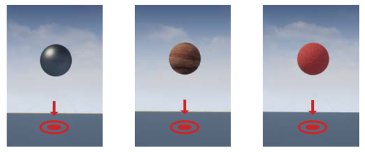
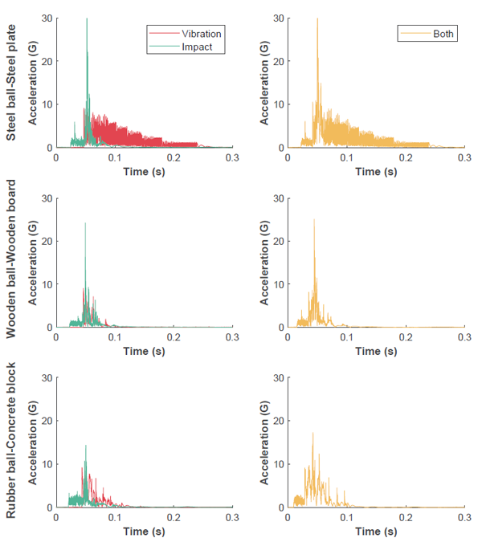

MULTIMODAL HAPTIC RENDERING
Combining vibrotactile and impact feedback
Realistic Haptic Rendering of Collision Effects Using Multimodal Vibrotactile and Impact Feedback
IEEE World Haptics Conference 2019 (WHC'19)
ABSTRACT
This paper addresses the potential benefits of multimodal haptic feedback combining vibrotactile and impact stimuli for the target domain of virtual collision simulation. In this hybrid approach, we complement the limitation of each modality with the advantage of the other modality. We present the design of a hybrid device including both vibration and impact actuators and a physics-based rendering method for realistic collision simulation. We also report a user study carried out to comparatively assess the subjective quality of haptic collision rendering using vibration only, impact only, and multimodal (vibration + impact) stimuli. Experimental results demonstrate that our multimodal approach can contribute to critically expanding the dynamic range of virtual collision simulation, especially between highly stiff objects.
FULL CITATION
Chaeyong Park, Jaeyoung Park, Seungjae Oh, and Seungmoon Choi. 2019. Realistic Haptic Rendering of Collision Effects Using Multimodal Vibrotactile and Impact Feedback. In Proceedings of the IEEE World Haptics Conference 2019 (WHC '19). IEEE, 449-454. DOI:https://doi.org/10.1109/WHC.2019.8816116
FIGURES
Structure and processes of multimodal haptic rendering

Screen shots. (Left) steel ball–steel plate. (Middle) wooden ball–wooden board. (Right) rubber ball–concrete block.

Acceleration profiles measured from our hybrid multimodal device for three pairs of virtual objects. The three objects in Fig. 4 made a free fall from the same height, and the resulting contact responses were recorded.
Mean scores for three haptic rendering methods and three object pairs. Error bars represent standard errors. Pairs grouped by asterisks were significantly different by Tukeys HSD tests